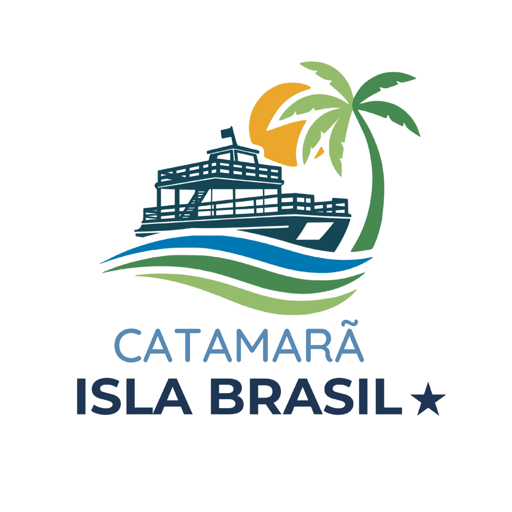
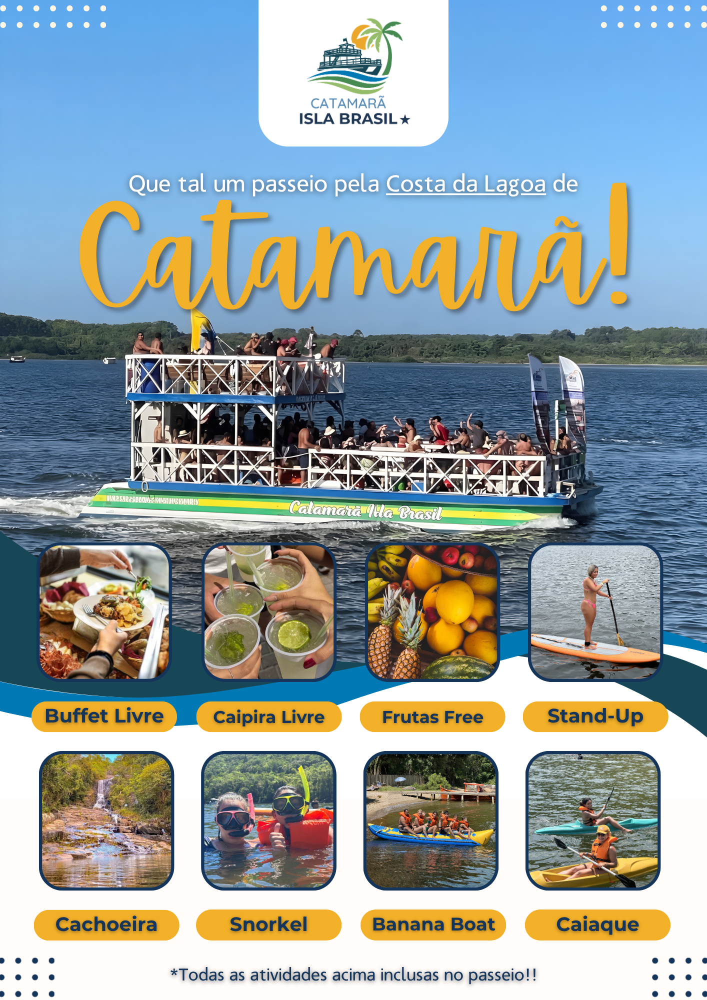
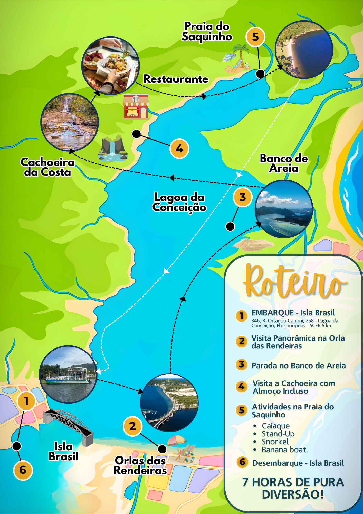

📍 Ponta do Pitoco · Lagoa da Conceição, Florianópolis
PT
ES

Passeios pela Costa da Lagoa
Natureza • Gastronomia • Experiência local • Diversão 🌴
Agende seu passeio aqui
Nosso Roteiro
Localização
Catamarã Isla Brasil
Nosso Roteiro
×
Um passeio pela Costa da Lagoa, saindo da Ponta do Pitoco.


Agendar este passeio